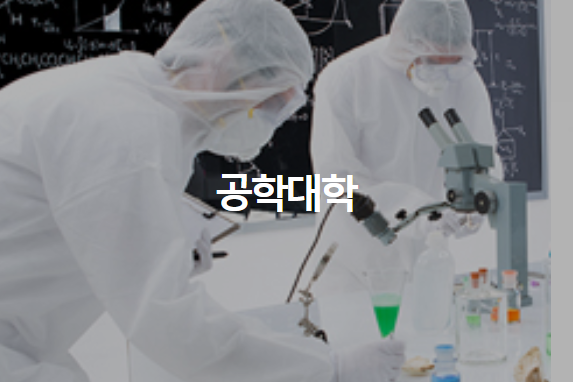
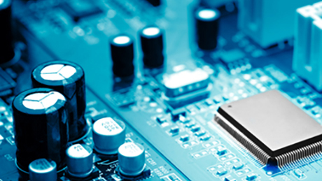

현재 한양대학교 에리카 캠퍼스에 재학중입니다. 한양대학교 에리카 캠퍼스는 서해안의 중심도시 안산에서 국내 최고의 학연산 클러스터(Education Research
Industry Cluster at Ansan)로 거듭나고 있는 ERICA캠퍼스는 산학협력의 새로운
성공적 모델을 제시하며 사회가 요구하는 뛰어난 실무형 인재를 양성하고
있습니다. 연구소 및 기업들과의 공동연구와 현장실습이 가장 활발한 산학협력의
명문으로 인정받고 있는 ERICA캠퍼스는 특성화 대학의 새로운 기준입니다.

공학대학
공학대학은 건축학부, 교통물류공학과, 전자통신공학과, 전자시스템공학과, 컴퓨터공학과, 재료공학과, 화학공학과, 기계공학과, 산업경영공학과, 생명나노공학과 등 공학의 모든 전공분야가 포함된 1개의 전공학부, 10개의 전공학과로 구성된 종합 공학대학입니다. 공학대학은 지식기반사회의 도래와 더불어 실용적 공학기술의 사회적 요구에 부응하기 위한 지속적인 교육 및 연구 환경의 개선에 박차를 가하고 있습니다.

전자공학부
전자공학부에서는 첨단 과학기술과 정보통신(ICT) 기반 산업의 융합을 통하여, 미래 지능형 전자전기 분야를 이끌어 나갈 주역을 양성한다. ICT 기술은 전자전기시스템은 물론, 안전, 보안, 교통, 의료, 교육, 국방, 제조업, 스마트 폰, 스마트 카 등 다양한 분야에 융합 활용되며 성장하고 있다. 전자공학(반도체, 회로설계, SoC), 통신공학(정보통신, 멀티미디어 신호처리), 시스템공학(전자전기 HW/SW시스템, 컴퓨터 HW/SW, 전기에너지) 분야를 배우고 산학연구사업에 참여하여, 산업 분야를 선도할 창의적인 현장맞춤형 전문인력 양성에 역점을 둔다. 2000년 대학교육협의회 평가에서 ICT 분야 91개 대학 중 전국 2위로 최우수 대학(원)에 선정되었고, 2014년도에 수도권대학 특성화사업(Creative Korea-Ⅱ)에 선정되어, 교재개발, 장학금, 첨단강의실/실험실, 산학협력, 동아리 활성화, 학습도우미(SEED 조교) 등의 우수 교육 프로그램 및 교육 환경 개선 프로그램을 운영하고 있다.